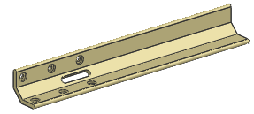
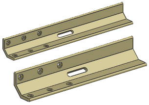

Open exp4_slider_bar.

Use expressions to locate the slot in the center of its placement face on the slider bar.

When the length of the bar changes, the slot should automatically be repositioned.
If the size of the slot changes, it should remain centered.